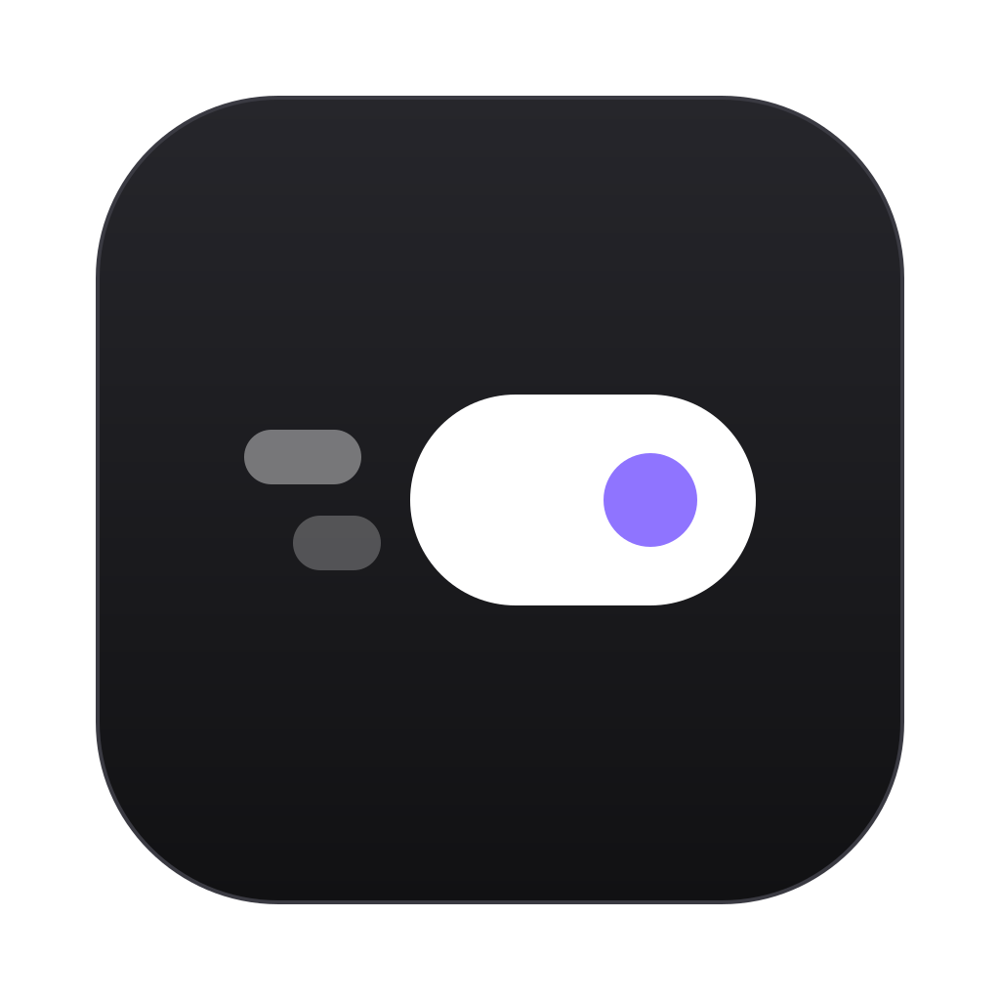

One bold chevron and the HyperMe dot: go, and it's on it.
Three chevrons fading in, the last one solid: momentum.
A chevron that lands in a check: you send it, it's done.
The pill from the overlay, moving fast, with its dot as the eye.
